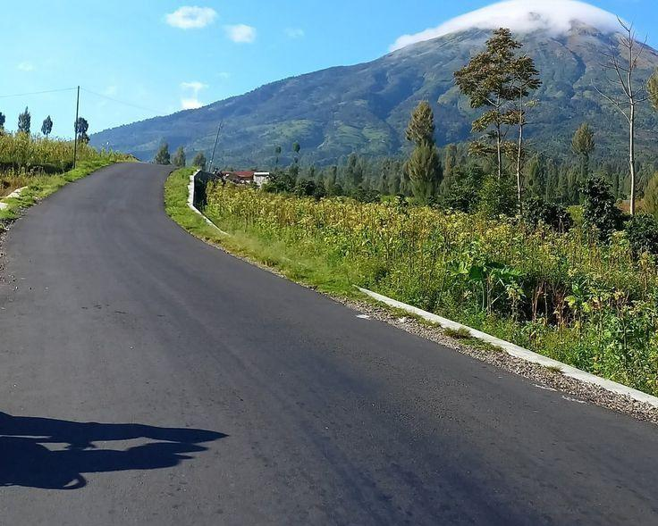
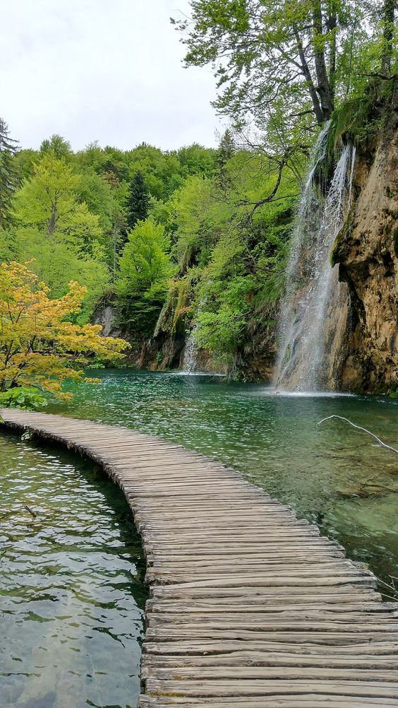

Menjaga keindahan alam Mataram

Selain pemerintah Kota Mataram yang aktif menjaga lingkungan dengan program pemilahan dan pengolahan sampah, turis juga memiliki peran penting dalam keberlanjutan kota. Wisatawan diimbau untuk tidak membuang sampah sembarangan, mengurangi penggunaan plastik sekali pakai, serta menghormati ruang publik seperti taman dan pantai. Banyak destinasi di Mataram, termasuk Taman Udayana dan kawasan wisata kuliner, kini menyediakan fasilitas tempat sampah terpisah agar turis bisa ikut serta dalam pemilahan organik dan anorganik. Dengan menjaga kebersihan dan mendukung program hijau, turis bukan hanya menikmati keindahan Mataram, tetapi juga ikut melestarikannya untuk generasi mendatang. Klik untuk melihat air terjun tibu ijo yang terjaga kebersihannya.
